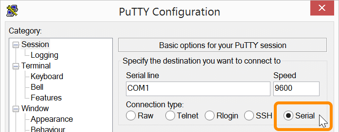
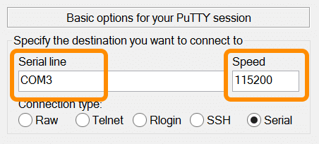
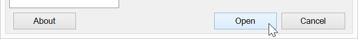
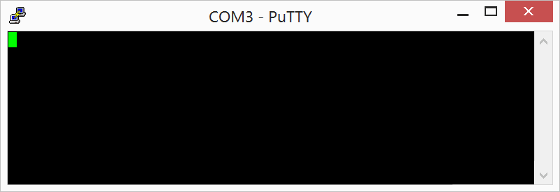
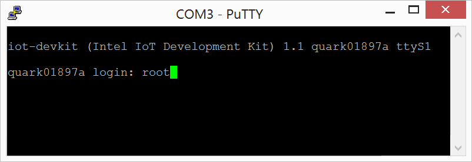

-
In PuTTY, double-check that you are in the “Session” screen.

-
Select the “Serial” radio button under “Connection type”.

-
Specify the destination you want to connect to:
- Serial Line: use the COM # (e.g. “COM3”) noted in Identify the serial COM port
- Speed: use “115200” for the baud rate

-
Click “Open” to connect to the board.

-
When you see a blank screen, press the Enter key.
For Intel® Edison boards running older firmware: You may need to press the Enter key twice.

-
Once connected you will see a login prompt.
Type in “root” for the username and press Enter.
